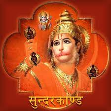

|  |
The Sundara Kanda consists of detailed and vivid accounts of the adventures of Hanuman. Sundara Kanda also tells about the magnanimous physical strength and power of Lord Hanuman. He turns to a huge shape to leap across the sea to Lanka. He fights many demons on the way who test his strngths and abilities, but none could stop the mighty Hanuman from reaching Lanka, to find out about Sita. When Hanuman reaches Lanka, all hell breaks loose. He destroys all the trees, the buildings and kills many of Ravana’s warriors. He also gets captured in order to have a dialogue with Ravana and pleads him to leave Sita. However, Ravana doesn’t agree, and instead condemns Hanuman and his tail is set on fire. Hanuman escapes and jumps from one roof to another, spreading fire in Ravana’s citadel. Then Hanuman heads back to to Kishkindha with the euphoric news.
|
|---|
| Back | Home Page |